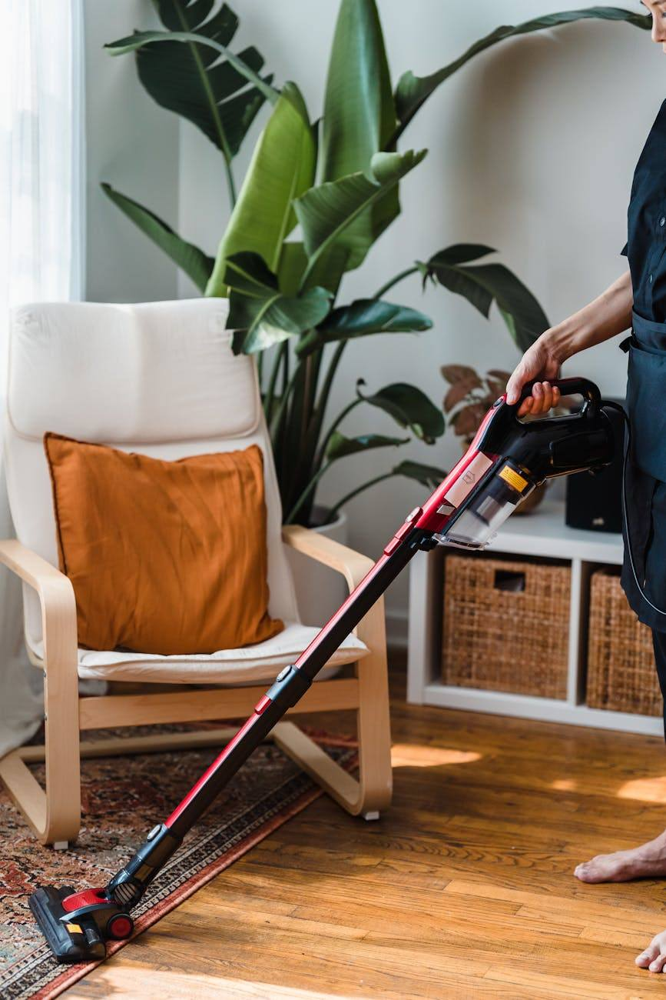
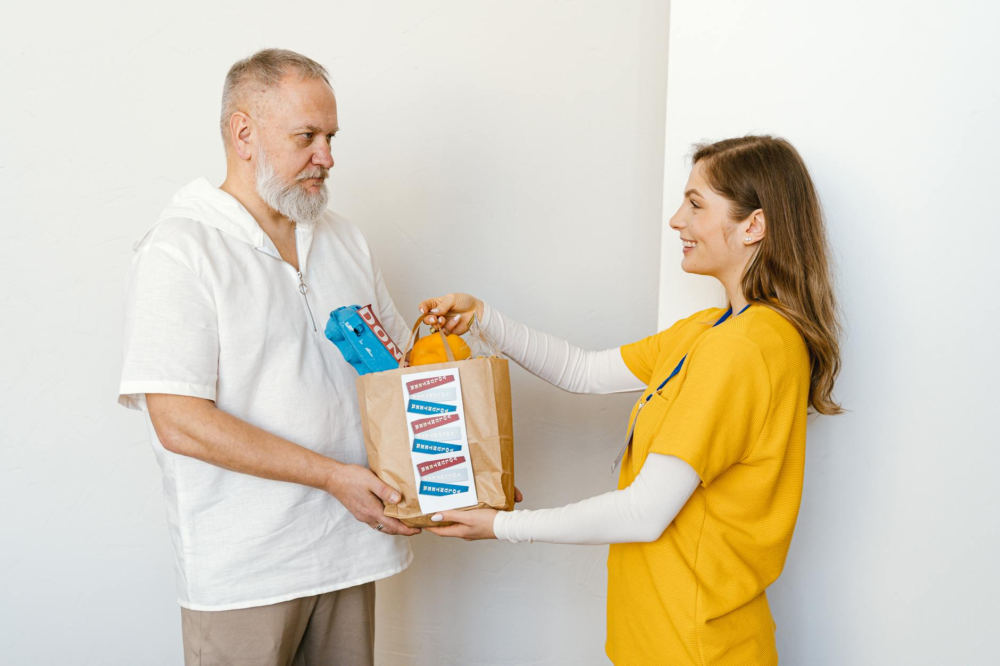

NDIS participant support
Premium cleaning designed around your comfort, indapendance and routines - delivered with care, efficiency and reliability.
Support for everyday living
Rosewood & Luster offers practical, considered suppport for NDIS participants, subject to individual plan limitations.
Thoughtful home cleaning tailored to your preferred routines, priorities and living environment.
Detailed, room-by-room care for resets, changing needs and homes requiring extra attention.
Yard work, gardening and irrigation support to keep outdoor spaces comfortable and managable.
Careful interior and exterior detailing to make everyday travel cleaner and more comfortable.
Help with suitable small household tasks, discussed with you before any work begins.
Flexible support for one-off projects, tailored to your goals and available plan funding.

A considered approach
We tailor our cleaning services to NDIS participants and families, delivering safe and supportive environments throughout homes and supported living spaces.
***Note for later: need to add more detail here, next section to include referral forms